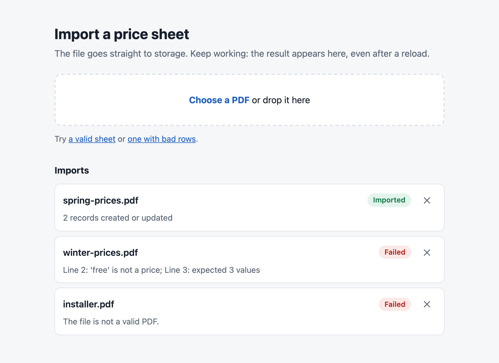

On this page
Executive summary
The whole story in thirty seconds.
The problem
Parsing an uploaded file inside an HTTP request ties up the API for the whole upload and parse, and the user watches a spinner that dies with the connection.
The approach
Split the job into four stages that share only a UUID: sign, upload, validate, process. Job state lives in one database row, so any stage can fail and be recovered.
The outcome
The API only signs URLs and updates state. Bad files stop before the application. Results survive reloads, restarts and killed workers.
What a synchronous import gets wrong
Seven failure modes of parsing a file inside the request, and the mechanism that removes each one.
| Symptom | Root cause | Fixed by |
|---|---|---|
| The upload times out at the gateway | The file passes through the API and the ingress | a direct-to-storage signed URL |
| The API slows for everyone during an import | CPU-bound parsing on the event loop | separate worker processes |
| Junk files reach the parser | No check before processing | edge validation |
| A half-imported file leaves partial records | Row-by-row commits | one transaction per file |
| The user reloads and loses the result | The result is tied to the open request | a durable job row, replayed on subscribe |
| Two uploads collide on a filename | A user-chosen storage key | a server-generated UUID key |
| A leaked upload link stays usable | Long-lived or broad credentials | write-only, one object, 15 minutes |
These are the failure modes of a synchronous import, not incidents from the original system. Generalized from production work: the client and product are not named, and the demo domain, price sheets, is invented.
What the pipeline had to guarantee
Nine goals, each with the mechanism that meets it; the repository pairs every one with the acceptance test or benchmark that proves it.
- Keep file bytes out of the APIA signed PUT: the browser uploads to storage. Proved by
make bench. - Never block the userThe upload returns at once and the result arrives by push, even from another replica.
- Reject bad input cheaplyThe edge reads the size and 5 bytes; an executable renamed to
.pdfnever reaches the parser. - Keep the API responsive while parsingParsing runs in separate worker processes, off the event loop.
- All-or-nothing importsEvery row is validated, then one transaction writes them; one bad row writes nothing.
- Never strand a jobA database sweeper resumes a job abandoned by a dead worker, recovers a lost webhook and expires abandoned uploads.
- Survive crashesA broken worker pool is replaced, and imports keep working after a worker process is killed.
- Lose no resultA late subscriber reads the result from the job row.
- Refuse forged inputAn HMAC-signed webhook, and a per-task token to read a status.
Out of scope on purpose: resumable uploads, files above a few MB, per-row partial success and progress percentages.
Who it serves
Three people touch an import: the one who uploads the file, the one who keeps imports healthy, and the one who changes the pipeline.
Catalogue editor
Loads price sheets
- Job
- Load a price sheet and get on with the day.
- What they get
- Pick a file, carry on, and see every problem in a bad file at once.
Operator
Keeps imports healthy
- Job
- Know what every import did, and fix the ones that stopped.
- What they get
- Machine-readable error codes, one row per job, and jobs that heal themselves.
Developer
Changes the pipeline
- Job
- Change and test the pipeline safely.
- What they get
- The whole flow on one machine with one command, and no cloud account.
The product
Pick a file and keep working; the result arrives on its own, and a bad file explains itself.

The web UI after three real imports against the local stack: one imported, one rejected with an error for every failing line, and a fake PDF stopped at the edge before it reached the application.
Solution architecture
The API signs URLs and owns job state; it never carries the file. Storage, an edge function and a worker pool do the rest, and every stage reports through one database row.
- Import line
- Reject line
System map
Figure 1Results come back through the database, not through the process pool, which is why any replica can push them. A sweeper on every replica reads the job table, so a lost webhook, a dead worker or an abandoned upload all end in a final state.
| Component | In this repo | Production original | Responsibility |
|---|---|---|---|
| Object storage | LocalStack S3 | Azure Blob Storage | Receives the upload, emits the event |
| Event delivery | S3 to SQS | Blob trigger | Tells the edge a file arrived |
| Edge validator | A Python service | Azure Function | Size and type check, move or delete, call the webhook |
| API | FastAPI | FastAPI on AKS behind API Management | Signs URLs, owns job state, hosts the WebSocket |
| Workers | ProcessPoolExecutor | multiprocessing.Pool | Parse and write records |
| Job state | A PostgreSQL table | A PostgreSQL JSONB table | The single source of truth |
| Client | Plain JavaScript | Vue 3 + Pinia | Upload, subscribe, results list |
Decisions
Seven architecture decision records, one per risk: request limits, correlation, junk input, durability without a broker, multi-replica results, partial imports and forged calls.
Direct upload with signed URLs
ADR-0001- Context
- Sending files through the API ties a request, a connection and memory to every upload, and the gateway’s limits become the feature’s limits.
- Decision
- The API creates a job and returns a signed PUT URL for one object, valid for 15 minutes. The browser uploads straight to storage.
- Result
- API cost per import does not depend on file size, and the browser never holds a storage credential.
A process pool plus a database sweeper, not a message broker
ADR-0004- Context
- Parsing is CPU-bound, volume is low and a broker is one more system to run. The original’s in-memory pool stranded jobs on restart.
- Decision
- Keep the pool in the API and treat the job row as the durable queue. A sweeper resubmits stale jobs up to 3 times, recovers ones whose file arrived and expires the rest.
- Result
- Durable jobs that survive restarts, with no broker to run. A row lock and upserts make at-least-once workers safe.
The filename is the correlation ID
ADR-0002- Context
- The upload, the storage event and the job row share no session; something must link them.
- Decision
- The object key is the server-generated task UUID; the user’s filename is only data in the job row.
- Result
- No lookup table, no collisions and no user input in storage keys.
Validate at the edge, before the application
ADR-0003- Context
- Junk files should not use a worker slot or reach a PDF parser.
- Decision
- A storage-triggered function checks the size from the event and the
%PDF-signature from a 5-byte ranged read; it moves or deletes the file. - Result
- A rejected file costs a few bytes of reading, not a parse.
WebSocket push, backed by the job row
ADR-0005- Context
- Polling wastes requests, and the original kept results in process memory: one replica, lost on restart.
- Decision
- Subscribing registers first, then reads the row; Postgres
NOTIFYfans changes out to every replica. - Result
- Any replica serves any subscriber, without Redis, and a late subscriber still gets the result.
One transaction per file
ADR-0006- Context
- A partially imported file is worse than a failed one: the user has to work out what landed.
- Decision
- Validate every row and report all errors together, then upsert every record in one transaction, in sorted order.
- Result
- A failed file writes nothing, reruns are safe, and sorted writes stop overlapping imports from deadlocking.
A signed webhook and per-task tokens
ADR-0007- Context
- The original relied on network placement to protect its webhook, and a task UUID was the only credential for a result.
- Decision
- The edge signs webhook bodies with HMAC-SHA256; a per-task HMAC token is required to read or subscribe.
- Result
- A caller inside the network can’t forge a result, and a task ID alone reveals nothing.
Implementation
Three mechanisms carry the guarantees: one row per job with guarded transitions, an edge that judges a file by five bytes, and a sweeper that assumes nothing arrives.
Every job ends in a final state
Figure 2Every transition out of pending is one atomic UPDATE … WHERE status = 'pending'. That single condition makes duplicate webhooks harmless and stops replicas racing.
The edge judges a file by five bytes
Figure 3The edge never downloads the file: the size comes from the event and the signature from a 5-byte ranged read. If the edge crashes, the queue redelivers the event. The signature check proves the type claim only; it is not a malware check.
Nothing assumes a message arrives
| Failure | What happens |
|---|---|
| The edge is down | Events wait in the queue |
| The webhook is lost after all retries | The sweeper finds the moved file and resumes |
| A worker is killed | The pool is replaced and the sweeper resubmits |
| The API restarts | The sweeper resubmits, and the browser reconnects and resubscribes |
| The user abandons the upload | The job expires, and a lifecycle rule clears the entry bucket |
| The same event is delivered twice | The second finds no object, or no pending job |
Connections can’t cross a process boundary, so the API sends a worker only the task ID and the worker builds its own clients. The worker always writes a final state, whatever it catches.
Taking it to production
The pipeline needs four things from a platform, and the same design maps onto AWS or Azure.
| Need | Local | AWS | Azure |
|---|---|---|---|
| Object storage with a signed PUT | LocalStack S3 | S3 | Blob Storage, write-only SAS |
| An object-created event | S3 to SQS | S3 to SQS or EventBridge | Event Grid, or a blob trigger |
| The edge validator | A Python service | Lambda | Azure Function |
| A private route to the webhook | The Compose network | VPC | VNet integration, private DNS |
The production checklist
- Secrets and authThe signing secret from a secret store (services refuse to start without it), real authentication on imports, and jobs tied to users.
- A private webhookKeep the webhook off the public gateway.
- Locked-down bucketsPrivate buckets, CORS limited to the app origin, a lifecycle rule on entry and a retention decision for persistent.
- Untrusted filesMalware scanning before a worker reads a file, and a parser run with memory and time limits.
- Scale and resilienceConnection pooling in the API and a dead-letter queue for storage events.
- AlertsOn failed result delivery, on
WORKER_LOSTand on the age of the oldest open job. - Tuned recoverySweep and stale timeouts above the longest real import.
- MigrationsSchema migrations instead of a single schema file.
Trade-offs
Every decision gave something up. These are the costs accepted on purpose.
| Chose | Instead of | The cost |
|---|---|---|
| An in-process pool + sweeper | Celery, or a message bus | Workers scale only with API replicas. |
Postgres NOTIFY | Redis pub/sub | A missed notification waits for the next subscribe. |
| WebSocket push | Polling | Stateful connections through the gateway. |
| One transaction per file | Per-row commits | One bad row fails the whole file, with every error reported at once. |
| An edge validator | Validating in the worker | One more deployable. |
| A fixed sheet format | Free-form extraction | Reliable and cheap, but a format change needs code. |
Results
The production original has run for two years. This rebuild is checked by acceptance tests against the running stack and measured with the benchmark below.
- API cost is flatThe API call takes 6 ms at every file size, because the file never touches it.
- The API stays responsiveIts p95 was 5.3 ms idle and 11.8 ms during 40 imports of 5 MB, 8 at a time.
- Self-healing jobsEvery job ends in a final state, whatever fails.
- Idempotent at every stepDuplicate events, webhooks and worker runs are harmless.
- Least-privilege uploadThe URL is write-only, for one object, for 15 minutes.
- Reload-proofChecked in a real browser, with the edge stopped and the API restarted mid-import.
Measured with make bench
| File size | API call p50 | End-to-end p50 | End-to-end p95 |
|---|---|---|---|
| 2 KB | 6 ms | 0.04 s | 0.10 s |
| 1 MB | 6 ms | 0.05 s | 0.08 s |
| 5 MB | 6 ms | 0.17 s | 0.23 s |
20 runs per size against LocalStack. They show the shape, not production capacity: the padded test files have two rows, so they measure moving bytes, not parsing large sheets.
System figures
| Setting | Value | Why |
|---|---|---|
| Signed URL lifetime | 900 s | Long enough for a slow upload, short enough to limit a leak. |
| Max file size | 5,120,000 bytes | Sheets are small. |
| Workers | 4 per replica | CPU-bound parsing. |
| Webhook retries | 3 attempts, 30 s timeout | 1 s and 2 s backoff ride out an API restart. |
| Worker attempts | 3 | Then WORKER_LOST, so a poison file can’t loop forever. |
| Sweeper | every 30 s, stale after 120 s | Compose uses 2 s and 5 s so the tests are quick. |
Try it yourself
The whole stack runs locally with Docker Compose and uv: two API replicas, the edge validator, PostgreSQL and LocalStack for S3 and SQS.
$ git clone https://github.com/the3ma/async-import-pipeline.git $ cd async-import-pipeline $ make up # API x2, edge validator, PostgreSQL, LocalStack (S3 + SQS) $ make test # unit tests, no Docker needed $ make e2e # acceptance tests against the running stack $ make bench # API cost and latency on your machine $ make down
Then open http://localhost:8100 and use the sample links on the page. The API, WebSocket, webhook and error codes are in the contract.
Lessons from the production original
What the first version taught, and what carries over to the next pipeline.
- Write back the location when a file moves.The worker looked in the old container until a later fix; local runs could not show it, because the file never moved there.
- Check config names end to end.Variables named differently in the infrastructure code and the app fall back silently to defaults. Fail at startup.
- Always send the correlation ID.A read failure that reports an unknown filename can never be matched to a job. Take the name from the trigger.
- Use bind parameters everywhere,including internal stores. File metadata is user input.
- Test recovery with a real kill.A simulated crash test passed while a real
kill -9hung every later import by breaking the process pool for good; a healthy replica masked the bug until the test ran on a single instance.
What’s next
Still open in this repository, each with its next step.
- User authenticationTask tokens are capabilities, and anyone can start an import. Add auth and tie jobs to users.
- Malware scanningOnly the signature is checked before the parser. Scan in storage and sandbox the parser.
- Size before uploadA signed PUT can’t cap size, so oversized files reach storage first. S3 POST policies can cap it; Azure SAS can’t.
- Workers on their ownHeavy parsing competes with the API for CPU. Move the workers to a dedicated service.
- A versioned sheet formatToday any format change needs code.
- A real cloud runTested on LocalStack only; this repository has not run on AWS or Azure.
Moving user files into a system that has to stay up?
I design and build systems like this one. If you are hiring, or have a problem that looks like it, I’d like to hear about it.